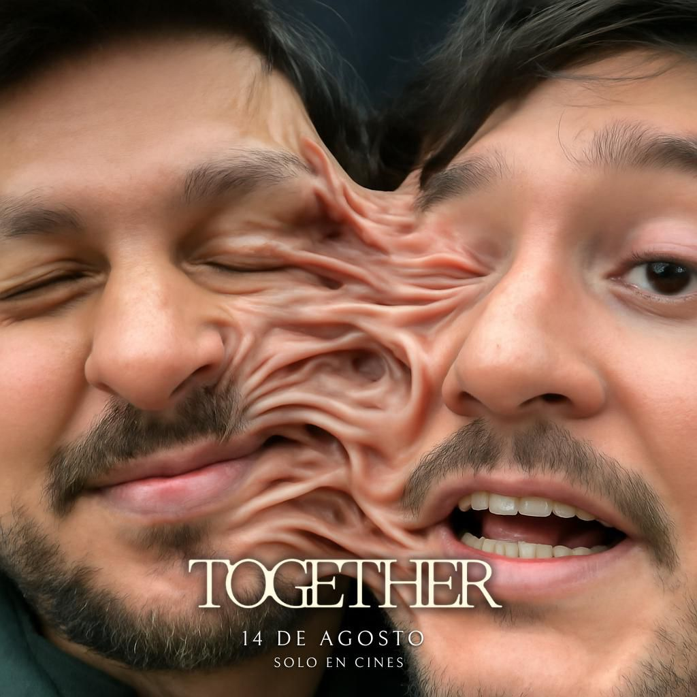
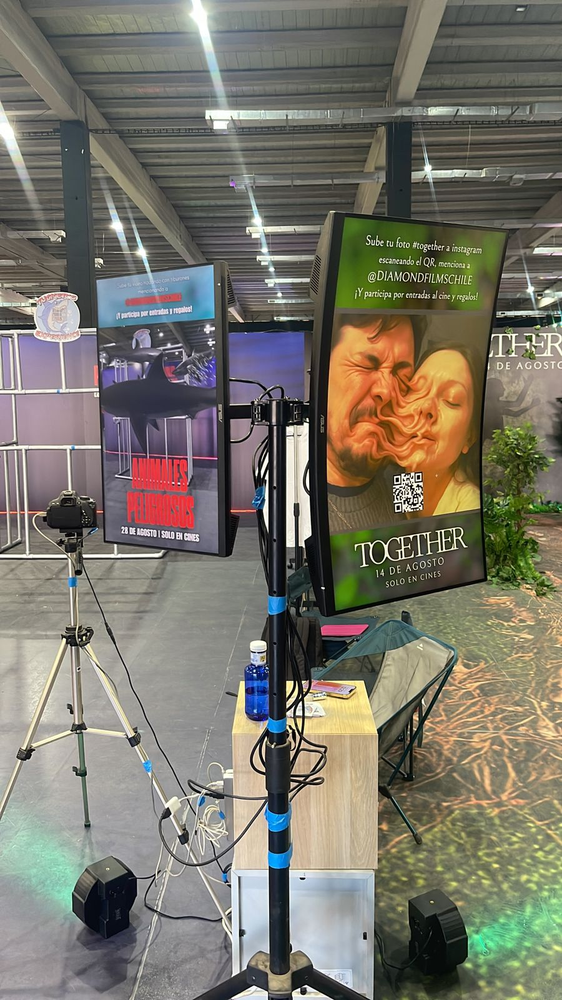
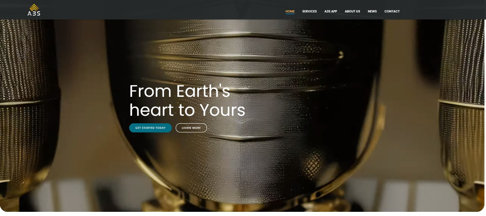
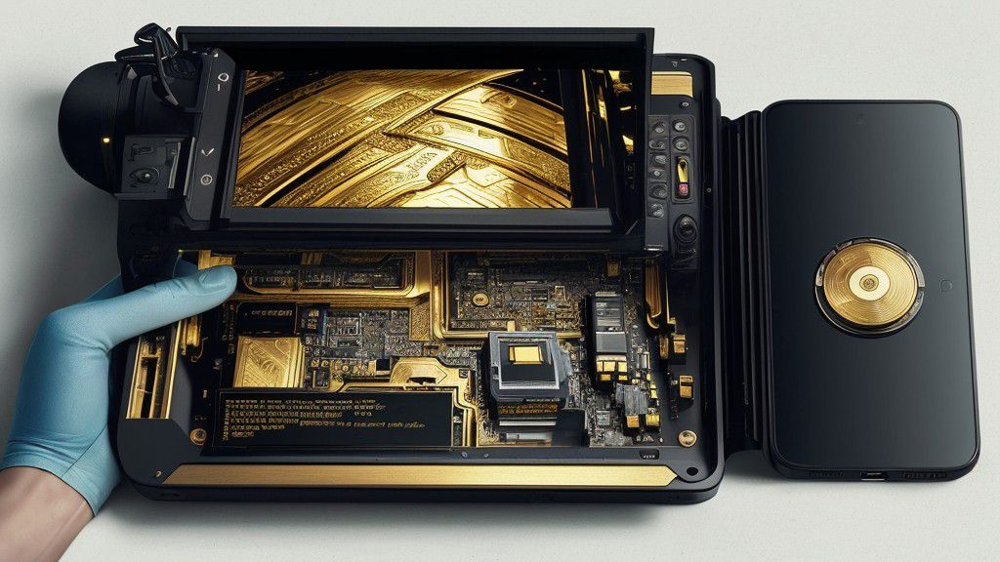
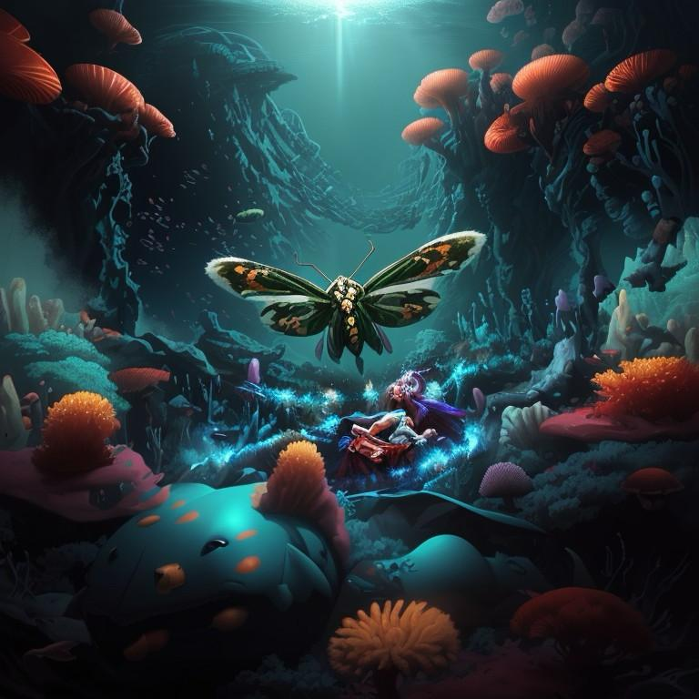
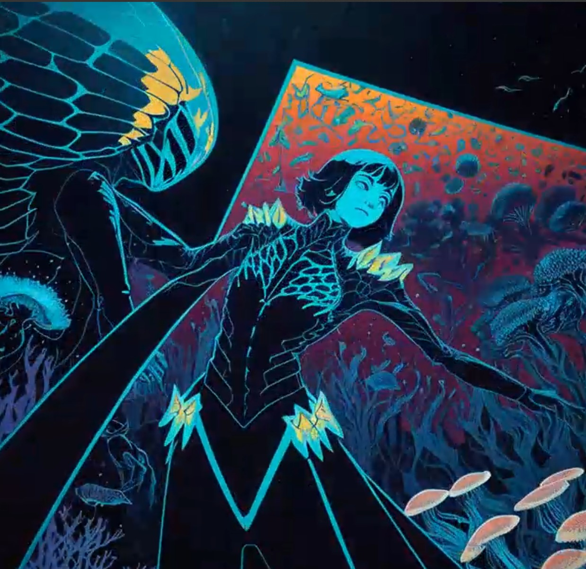
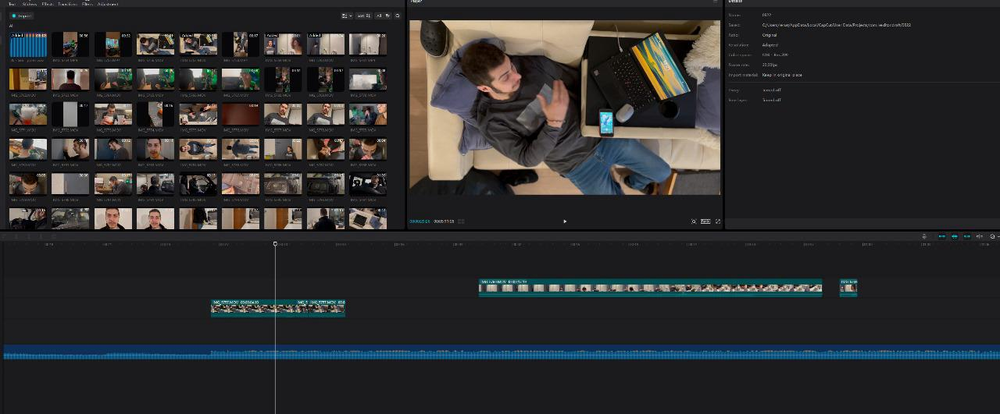
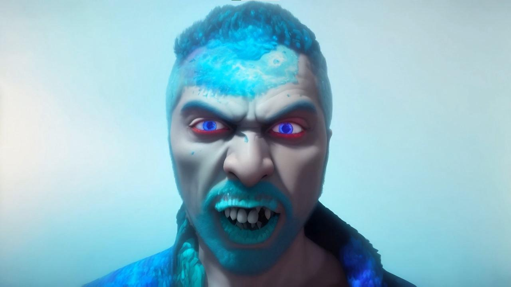

elealcubo
creative studio.
Work
2025 | AI Experience | Comic Con Chile | Together Movie


For Together, we designed an AI prompt that merged the faces of spectators as they took a selfie—emulating the eerie, poetic effect of being fused forever, just like in the film.
A souvenir from a moment that shouldn't be shared… yet is.
go!
A souvenir from a moment that shouldn't be shared… yet is.
2025 | AR Experience | Comic Con Chile | Dangerous Animals Movie
For Dangerous Animals, we created an augmented reality experience where visitors could step into a shark cage and watch as digital sharks swam around them.
A mix of awe and tension—bringing the ocean’s most feared creatures into a controlled encounter, just a scan away.
go!
A mix of awe and tension—bringing the ocean’s most feared creatures into a controlled encounter, just a scan away.
2024 | AI Short | Master Thesis | Mycellium
For Mycelium, we set out to explore the unseen.
Through AI, we crafted a journey into the hidden behavior of microorganisms—those we think we understand, yet remain just outside our grasp.
A microscopic dive into a world we're only beginning to glimpse, where every movement hints at deeper, living systems beneath the surface.
Through AI, we crafted a journey into the hidden behavior of microorganisms—those we think we understand, yet remain just outside our grasp.
A microscopic dive into a world we're only beginning to glimpse, where every movement hints at deeper, living systems beneath the surface.
2024 | AI Short | A3S | From Earth's Heart to Yours


For A3S, we were asked to create a short, soundless video that captured the artistry behind gold refinement—and its impact on everyday life, from its origins to a future still unfolding.
The entire process was AI-driven: from script to visuals, animations and final output.
go!
The entire process was AI-driven: from script to visuals, animations and final output.
2024 | AI Music Video | Crossmoth | Glimpse at the Future Single


For Glimpse at the Future, we experimented with a master prompt to generate a visualizer-style experience—one that captured the artist’s concept and the spirit of the video.
An exercise in handcrafted automation.
go!
An exercise in handcrafted automation.
2024 | AI Music Video | Crossmoth | Sea of Spores


For Sea of Spores, we wrote the script, storyboarded the scenes, and shot all the footage. Then we processed each shot through AI using Kaiber, crafting the final visuals step by step.
A handmade-meets-machine journey, right at the dawn of AI as we know it.
go!
A handmade-meets-machine journey, right at the dawn of AI as we know it.